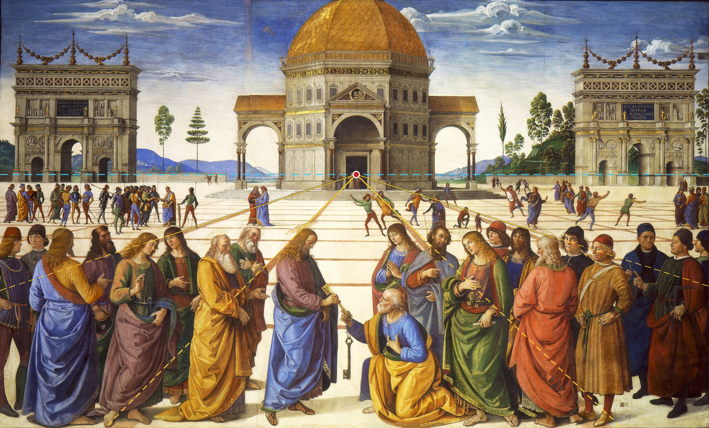

Pourquoi notre regard entre-t-il dans la place ?

Commencez par regarder le sol. Les lignes du pavement qui s’éloignent de nous convergent vers un même point, situé dans la porte du temple central : le point de fuite.
Les bandes transversales du dallage paraissent de plus en plus rapprochées. Les personnages deviennent plus petits dans le lointain. Ces indices nous font percevoir une profondeur sur une surface pourtant plate.
Mais cette construction fait davantage que creuser l’espace. Elle place le temple dans l’axe central du tableau et donne à la scène son équilibre monumental.
Essayez
Cachez un instant la moitié supérieure de la fresque. Le pavement suffit-il encore à vous faire sentir la profondeur ?